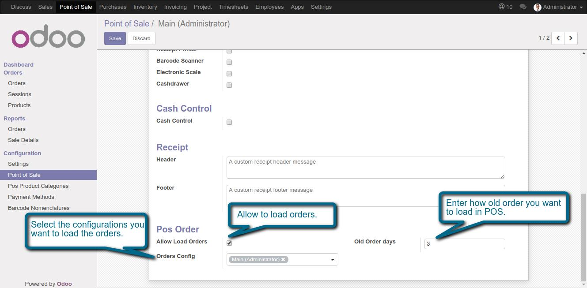
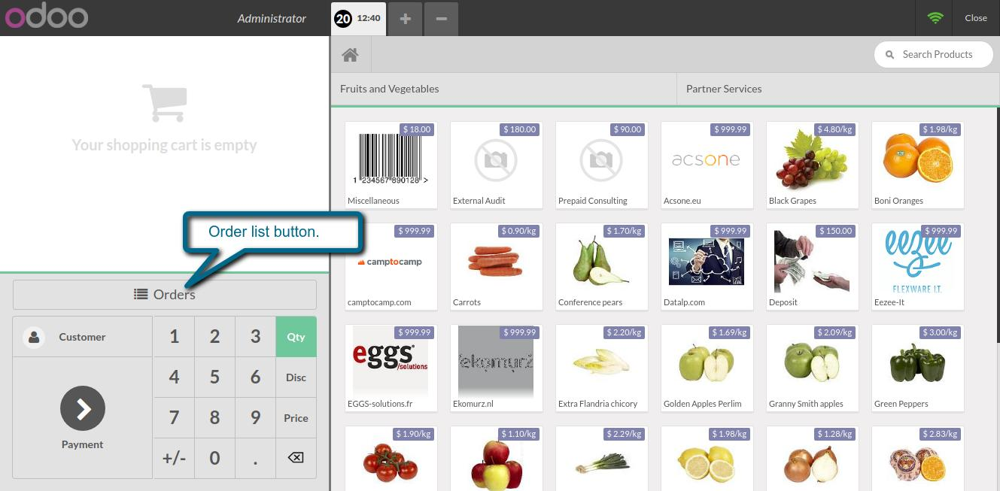
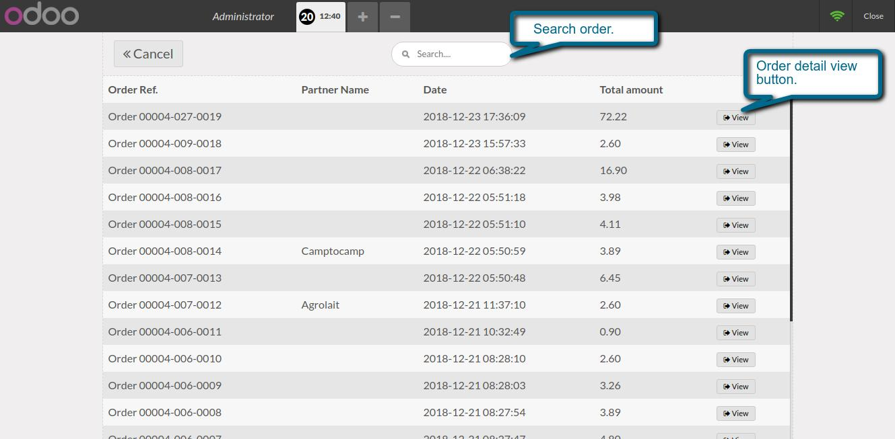
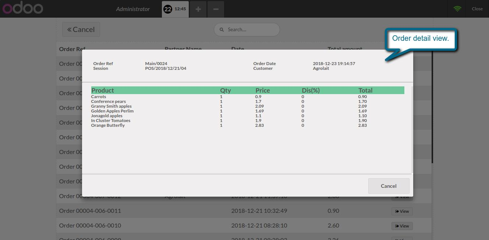

POS Orders
This module allows you to show old orders
- We can easily load old orders from POS interface.
- We can easily filter orders by date and configuration to reduce load time.
1. Pos order list configuration.

2. Old Order list button.

3. List of old orders.

3. Old order detail view.

If You Need Any Help Please Contact
Email Id: dev.webveer@gmail.com